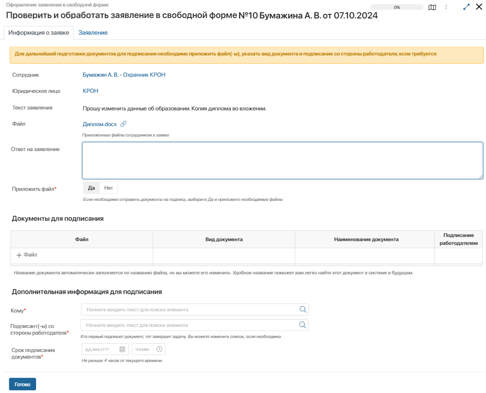

Любой сотрудник может сформировать заявление в свободной форме и направить его на рассмотрение.
Цель процесса |
Согласовать руководителем заявление и предоставить ответ сотруднику, оформить необходимые документы. |
Результат процесса |
|
Участники процесса |
|
Процесс работы с заявлением состоит из следующих этапов:
- Создание и подписание заявления в свободной форме.
- Согласование заявления в свободной форме.
- Обработка заявления в свободной форме.
Создание и подписание заявления в свободной форме
Все сотрудники могут создавать заявления в свободной форме на портале КЭДО. Они сохраняются в разделе КЭДО > Заявления в свободной форме. Здесь специалисты, работающие с решением ELMA365 КЭДО 3.0 в интерфейсе системы, также могут сформировать заявление в свободной форме. Для этого:
- В правом верхнем углу страницы нажмите кнопку +Заявление в свободной форме.
- В открывшемся окне заполните поля:
- Сотрудник* — поле заполнится автоматически, если вы занимаете одну должность в организации. В ином случае отобразится запись приложения Сотрудники по основной должности с возможностью выбрать запись по другой должности;
- Согласующие* — по умолчанию в этом поле задан руководитель инициатора заявки. Вы можете выбрать другого сотрудника или указать несколько согласующих;
- Текст заявления* — напишите содержание, которое отобразится в печатной форме заявления;
- Файл — можно приложить дополнительные файлы, например сканы документов.
Нажмите кнопку Сформировать заявление.
- Вам поступит задача Подписать заявление в свободной форме. На вкладке Заявление проверьте текст в сгенерированном файле заявления:
- если все данные корректны, нажмите кнопку Подписать и введите данные сертификата для подписания заявления электронной подписью;
- если обнаружена ошибка, нажмите Отказать. Тогда текущий процесс завершится. Вы можете сформировать заявление заново.
Согласование заявления в свободной форме
После того как сотрудник создал и подписал заявление, указанный в нём согласующий получит задачу Согласовать заявление в свободной форме.
В задаче можно ознакомиться с текстом заявления, а также дополнительными файлами, которые приложил сотрудник.
Если задано несколько согласующих, параллельно каждый из них получит задачу согласовать заявление.
Дальнейший ход процесса зависит от резолюции согласующего:
- Согласовать — задача по обработке заявления поступит специалисту отдела кадров;
- Отказать — в этом случае согласующий указывает причину отказа. Далее инициатору поступит задача Ознакомиться с причиной отказа. После ознакомления процесс завершается. Если требуется корректировка данных, можно создать новое заявление.
Если в заявлении указано несколько согласующих, процесс перейдёт к этапу обработки заявления только в случае его одобрения всеми согласующими.
Обработка заявления в свободной форме
После согласования заявления специалист отдела кадров получит задачу Проверить и обработать заявление в свободной форме. Выполнение задачи зависит от того, требуется подписать какие-либо документы на основании заявления или нет.

Подготовка документов и их подписание
Если нужно подготовить и подписать документы, в поле Приложить файл* выберите значение Да. После этого:
- Приложите файлы в таблицу Документы для подписания. В каждой строке укажите вид документа и необходимость его подписания со стороны работодателя.
- Заполните дополнительную информацию: укажите сотрудника, который подпишет документы, а также подписанта со стороны работодателя и срок подписания. По умолчанию при выборе сотрудника подписант указывается автоматически из карточки подразделения по ШР, в котором числится выбранный сотрудник. Это значение можно изменить.
- Нажмите Готово. После этого задача подписать документы поступит подписанту, и после её завершения — сотруднику для подписания электронной подписью. После подписания всех документов с обеих сторон процесс завершится.
Ознакомление с ответом на заявление
Если подготовка документов не требуется, в поле Приложить файл* выберите Нет. Затем в поле Ответ на заявление укажите комментарий и нажмите Готово.
После этого сотруднику поступит задача Ознакомиться с ответом на заявление в свободной форме. После ознакомления процесс завершается.